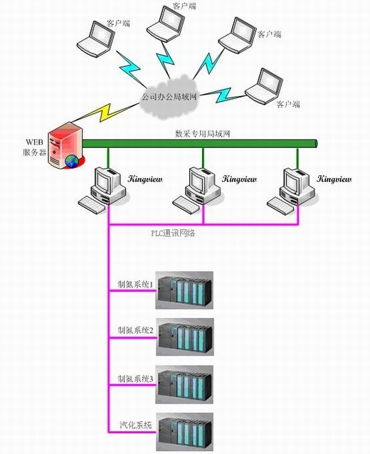

工业企业信息安全分析
原创作者：王永建(blog@wangyongjian.cn)
原文引用地址：https://blog.wangyongjian.cn
随着工业互联网的大规模应用，信息安全也逐步开始成为关注的热点了。相比普通的网络应用，工业网络的信息安全更加重要，下面我们从前几年发生的针对工业系统的蠕虫病毒“震网”说起。
震网（Stuxnet），又称作超级工厂，是一种Windows平台上的计算机蠕虫，2010年6月首次被白俄罗斯安全公司VirusBlokAda发现，其名称是从代码中的关键字得来，它的传播是从2009年6月开始甚至更早，首次大范围报道的是Brian Krebs的安全博客。它是首个针对工业控制系统的蠕虫病毒，利用西门子公司控制系统（SIMATIC WinCC/Step7）存在的漏洞感染数据采集与监控系统（SCADA），能向可编程逻辑控制器（PLCs）写入代码并将代码隐藏。
这是有史以来第一个包含PLC Rootkit的电脑蠕虫，也是已知的第一个以关键工业基础设施为目标的蠕虫。对该病毒最具影响力的报道就是该蠕虫病毒感染并破坏了伊朗纳坦兹的核设施，并最终使伊朗的布什尔核电站推迟启动。
“震网”主要通过U盘和局域网进行传播，是第一个利用Windows“零日漏洞”，专门针对工业控制系统发动攻击的恶意软件。“震网”是一种典型的计算机病毒，能自我复制，并将副本通过网络传输，任何一台个人电脑只要和染毒电脑相连，自动传播给其他与之相连的电脑，最后造成大量网络流量的连锁效应，导致整个网络系统瘫痪。 “震网”通过伪装RealTek与JMicron两大公司的数字签名绕过操作系统的安全检测，自动找寻及攻击工业控制系统软件，可以工作人员却毫不知情的情况下控制现场设备的运行，甚至可以异常使系统异常停车而毁坏设备。由此，“震网”成为第一个专门攻击物理世界基础设施的蠕虫病毒。
工业信息系统现状分析
本文所涉及的信息系统是指工业系统的控制网络，以下统一称为工业控制系统。如图1所示常见的信息系统包含控制器、SCADA监控系统、自动化专用软件系统、工业网络设备等组成。由于其特殊应用，工业控制系统以往更注重稳定性、实时性、高性能等方面，信息安全往往被忽视。

图1.采用组态王的工业信息系统结构图
存在的问题
工业信息系统由于其自身特点，在信息安全方面存在诸多薄弱环节
1、 工业控制系统在数据传输上的实时性很高，网络传输的信息大多都是不加密的明文，很多数据传输协议为公开协议，这些数据基本上是没有安全性。
2、 操作系统和系统软件漏洞 由于软件的兼容性问题，大多数工业控制系统中的工控机（工业用计算机）是关闭了系统本身的升级功能的。造成操作系统比如Windows操作系统，工业系统软件比如WinCC在发现软件漏洞后不能及时的进行修复。
3、 病毒入侵 鉴于软件兼容和无法升级等原因，工业控制系统大多是不安装杀毒软件的。
4、 防火墙 在大多数工业控制系统中是配置有防火墙设备的，但是这些设备并没有发挥其应有的作用，不对默认配置进行修改，造成防火墙形同虚设。
5、 管理问题 由于缺少信息安全的意识，大多工业控制系统中存在一机多用，专机不专用的现象存在，U盘的随意使用，不相关软件的随意执行，给计算机病毒的入侵带来的隐患。
可行的应对策略
1、 采用加密的传输协议 在网络传输层可通过采用加密的通讯协议增强系统安全性。由于现场大多数的底层控制器比如PLC、仪表、执行机构等本身采用非加密协议，可采用数据通讯网关在现场将这些非加密的通讯协议转换为安全的已加密的通讯协议，比如OPC UA协议。
2、 加强防火墙等网络设备的安全等级 对于防火墙、流控等网络安全设备，请根据自身需求建立满足自身应用需要的规则库，使其发挥最大的能力，增强网络安全。
3、 从操作系统底层技术防范 可采用嵌入版操作系统提高操作系统的安全性。比如Windows平台可采用Windows系统的嵌入版，Windows XP SP3对应的嵌入版是Windows Embedded Standard 2009（WES2009） ，Windows 7对应得嵌入版是Windows Embedded Standard 7（WES7），Windows 8对应得嵌入版是Windows Embedded Standard 8（WES8）。这些嵌入版操作系统都是在通用版本上进行了组件化，和通用操作系统兼容，可根据需要将通用系统中不需要的组件进行裁剪，提供系统的安全性。
4、 安全认证 对于常用的U盘的外部设备可通过对USB设备进行安全认证，只有通过安全认证机制安全认证的USB设备才允许被使用，其他USB设备插入后自动关闭USB接口。
5、 应用白名单 建立应用程序白名单系统，只有在白名单内的应用程序才可运行，白名单之外的程序一律不可运行，即使具有最高管理权限也发执行。
6、 管理及其他防范措施 加强工业系统安全意识，加强U盘等外部设备的使用管理，定期进行系统漏洞扫描，修复已知的安全漏洞。
参考资料
1、 wiki 百科震网词条 https://zh.wikipedia.org/wiki/%E9%9C%87%E7%BD%91
2、 光明网《“震网”病毒奇袭伊朗核电站》 http://reader.gmw.cn/2012-03/23/content_3827138.htm